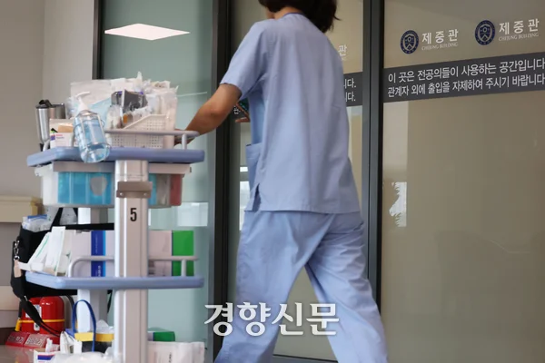

내년부터 1년에 병원 300번 넘게 가면 본인부담 90% : 네이트 뉴스

내년부터 한 해 외래진료를 300회 넘게 받으면 301회째 진료부터 진료비의 90%를 환자가 부담하게 된다.
다만 아동과 임산부, 중증·희귀질환자 등 치료를 위해 잦은 외래진료가 필요한 환자는 예외다.
보건복지부는 8일 국무회의에서 이 같은 내용의 국민건강보험법 시행령 일부개정령안이 의결됐다고 밝혔다.
개정안은 내년 1월1일부터 시행된다.
현재는 건강보험이 적용되는 외래진료를 연간 365회 넘게 받으면 366회째부터 본인부담률 90%가 적용된다.
정부는 내년부터 이 기준을 연 300회로 낮추기로 했다.
연간 300회는 일주일에 약 6차례 의료기관을 찾는 수준이다.
복지부에 따르면 지난해 외래진료 이용자 약 4840만명 가운데 연간 300회를 초과해 진료받은 사람은 7765명이었다.
이들은 연평균 344.7회 외래진료를 받았다.
한 해 동안 외래진료를 1775회 이용한 사례도 확인됐다.
일년에 12번 이상가면 할증되게해야지
일년에 한두번 가는 사람만 개손해인데